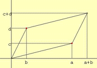
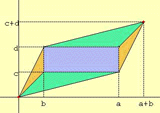
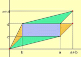
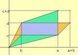
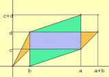
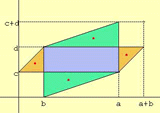
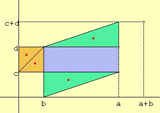
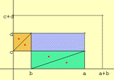

The Area of a Parallelogram(2)
Do you know why the area of a parallelogram by 2 vectors (a,c) and (b,d) is the absolute value of (ad-bc)?
How to use this applet.
1.Drag the red point to move the position vectors(a,c) and (b,d).
2.Click "Define" button to fix a parallelogram.
3.Drag the red point to transform the parallelogram.(The area is never changed.)
4.Drag the red point to move the triangles.
5.Click "Init" button to try again.
Applet
Drag red point!
Hint

